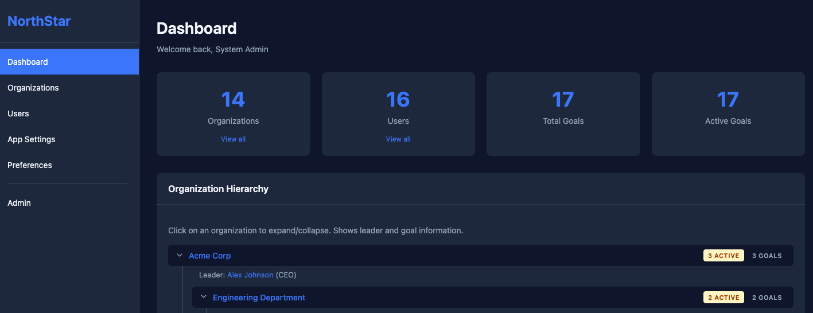
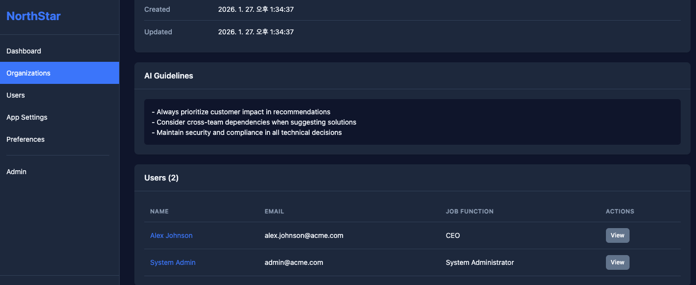
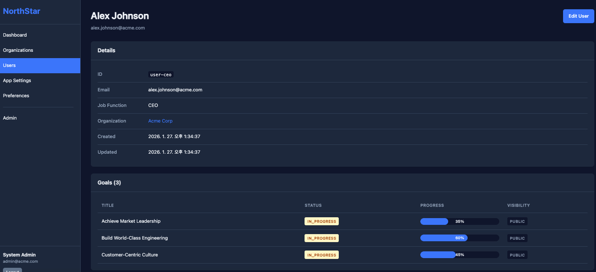

Define your organization's goals hierarchically and inject them into AI assistants through the Model Context Protocol, so everyone's work points the same way.
View on GitHub Get startedThe same request yields very different results depending on who's asking and what context they have. Shared organizational goals should be part of that context.
Model goals from the company down to each team, with parent goals cascading as context.
Exposes the current user's goals and AI guidelines as an MCP resource any compatible assistant can read.
Search goals across the organizations a user can access, backed by role-based access control.
Submit a question about another team's goal straight from your assistant.



git clone https://github.com/zafrem/Waypoint.git
cd Waypoint
npm install && npm run build
npm run seed
WAYPOINT_USER_ID=user-jane-smith npm startThen add it to your MCP client, for example Claude Desktop:
{
"mcpServers": {
"waypoint": {
"command": "node",
"args": ["/path/to/Waypoint/dist/index.js"],
"env": { "WAYPOINT_USER_ID": "user-jane-smith" }
}
}
}waypoint://context/current_userResource: user context with goals and AI guidelines.
get_parent_goalsGoals from parent organizations.
search_collaborator_goalsSearch goals across accessible organizations.
submit_questionAsk another team about one of their goals.